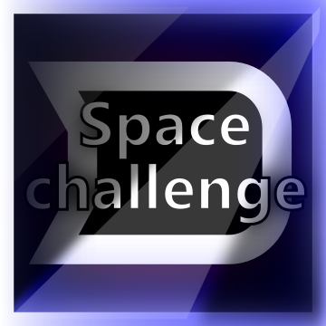

Space Challenge
O hře
Také máš plné zuby her, kde se střílí, střílí a zase jen střílí? Ne? Tak to jsi na správné cestě. V mé hře musíš zničit takřka celé galaxie plné nebezpečných nepřátel! Ve 3 galaxiích na celkem 60 místech tě budou čekat hordy lačnící po tvé smrti, ale to je něco, co jim rozhodně nesmíš dopřát, a proto je sundej jako první. Budeš tak moci sesbírat všechny části portálu roztroušené po mapě a dostat se tak do vyšších úrovní. Za sbírání těchto prvků dostaneš automaticky peníze, za který si vylepšíš raketu a budeš moci zničit víc a více nepřátel, případně si pořídíš lepší skin. Tvoje touha po krvi se pravděpodobně dostane do hrůzných dimenzí, takže sem se snažil, aby si ji mohl všechnu pěkně ventilovat.
Pozn.: Přestože se Space Challenge zdá býti brutální, je vytvořen s citem a láskou.
 (Již brzy)
(Již brzy)
Ukázka hry

Hru jsem se snažil koncipovat jako co nejjednodušší. Proto sama o sobě není složitá. Pro vítězství v každém levelu je potřeba sesbírat roztroušené části portálu (na obrázku) a dostat se dovnitř samotného portálu. Aby se vám to nepodařilo, tak jsou zde připraveni nepřátelé různých velikostí a s různými parametry.

Ukázka portálu (deaktivovaný a aktivovaný)


Hra
Grafika je založena na nejjednodušších objektech a to jsou čtverečky a kolečka plus "barevné světlo". To mi dalo možnost vytvořit příjemnou grafickou koncepci v relativně krátkém čase. Jediné, co není vytvořeno ze základních objektů je raketka, kterou ovládá hráč, nicméně i ta je tvořena v duchu jednoduchosti. Co je také důležité a na obrázku se těžko ukazuje je práce s kamerou, je třeba, aby byla vždy zaměřena na hráče a zároveň dávala nahlížet tam, kam by to člověk očekával. Když uživatel střílí, tak je na tu stranu zaměřený, tudíš by o ní měl rád přehled. Dobře posunem tím směrem kameru. Nestřílí? Dobře kamera bude zabírat místo, před raketou, kam právě letí. Pro kvalitní zážitek hraní jsem nezapomněl na screenshake! Jste zasaženi? Bum, kamera se třese. Bez toho by to nikoho nebavilo.


Menu

V menu jsem se na grafické efekty tolik nesoustředil. Chtěl jsem docílit hlavně toho, aby člověk, který o této hře v životě neslyšel, menu "pochopil" již od prvního okamžiku. Vymyslel jsem tedy koncept seznamů tlačítek, který je jednou z pro uživatele nejjednodušších možných typů menu. Zároveň je velice jednoduché vytvořit výsledou strukturu menu (zajištění, aby tlačítka odkazovala na další seznamy tlačítek).

Na obrázku výše je část menu, kde si uživatel vybírá, který svět chce hrát. Pokud jeden svět nedokončil, nemůže se tak dostat do dalšího. Pozadí tlačítek nebylo nějak zvlášť využito, a tak jsem ho použil jako ProgressBar (ukazatel postupu) a ukazuje, jakou část již hráč prošel.

V části, kde se dají kupovat upgrady, je výše zmíněný ProgressBar také použit a to k zobrazení, jak moc je raketka vylepšena. Upgrady se kupují za coiny, které se dostávají za sbírání jednotlivých částí portálu.

Vytvořil jsem i možnost zakoupit za nasbírané coiny nový skin na raketu.
Zdrojové kódy
Na začátek seznámím laiky s tím, jak taková hra obecně vypadá "pod kapotou". V zásadě o nic složitého nejde, ve hře je každych x milisekund (např.: 16ms při 60FPS) zajištěno, aby všechny prvky měly možnost změnit svůj stav (posunutí, rotace, změna barvy, výstřel, ...), to se děje v metodě nazvané Update. Poté je třeba všechny prvky vykreslit pomocí metody Draw, poté se spouští znovu Update a hra takto stále pokračuje. Na začátku k vytvoření všech prvotních prvků, jako bývá nejčastěji menu, se volá metoda Load.
Co se týče zdrojových kódů jako takových, zakládal jsem si na podobných hodnotách jako při návrhu hry. Myslím tím především jednoduchost, preciznost, efektivitu a přehlednost. Přehlednost samotná je velice důležitá, Visual Studio (prostředí na vývoj) podporuje tzv. regiony, to nám umožní "sbalit" část kódu a pojmenovat, takže poté nemusíme, při zběžném procházaní kódu, řešit, co přesně se uvnitř regionu děje - máme to pojmenované. Samozřejmě tam, kde je potřeba dovysvětlit funkčnost jsem používal poznámky. Třídy tedy často budou mít podobný vzhled, pokud nebudu mít otevřené regiony, jako na obrázku níže.

Samotná třída Table je páteřní třídou celého programu, která se stará o propojení menu a hraní levelů. V ukázkách kódů si ji můžete celou prohlédnout.
Rád bych zde vypíchl z této třídy část, kde dochází k výše zmíněnému updatu. Ačkoliv je tato metoda velice důležitá a používaná po celou dobu běhu aplikace a zajišťuje vlastně celý chod hry, je poměrně krátká. A tak to má být, v ideálním případě se snažím, aby třídy a metody byly co nejkratšího rozsahu, práce se poté dělí do dalších částí programu, což umožňuje snadné ladění a poskytuje příjemnou přehlednost.
public void Update(GameTime gameTime, MyState myState)
{
#region Menu
if (ActiveMenu != null)
{
ActiveMenu.Update(gameTime, myState);
}
#endregion
#region Level
if (Level != null)
{
#region Level pause
if (myState.BackPressed && !myState.GamePadStateHandelt)
{
SetMenu(MenuType.Pause);
Level.Pause();
myState.GamePadStateHandelt = true;
}
#endregion
Level.Update(gameTime, myState, Content, GraphicsDevice);
}
#endregion
SoundEff.Update(gameTime);
CoinView.Update(gameTime);
}
Za zmínku stojí i třída, která se stará o práci s kamerou (Camera). Ukáži zase jen metodu Update, celá je k nalezení zde v repozitáři. Kamera samotná se skládá z různých pohybů. Je třeba zajistit, aby snímala hráče (TargetViewMove), pak také aby se "třásla" (ShakeScreen), aby se mohla posouvat tím, že uživatel táhne po obrazovce (DragViewMove) - tato funkce nebude v publikované verzi zpřístupněna. A jako poslední úkol dávám kameře posouvat se, tak aby uživatel viděl, kam střílí nebo letí (ToSeeViewMove). Kamera je tedy na zmíněné části "rozkouskována" a finální pozice se vypočítá sečtením všech částí.
public void Update(GameTime gameTime, MyState myState)
{
#region Counting parts of ViewMove
TargetViewMove.Update(gameTime);
DragViewMove.Update(gameTime, myState);
ShakeScreen.Update(gameTime);
ToSeeViewMove.Update(gameTime);
#endregion
this.Zoomer.Update(gameTime, myState);
#region Counting final ViewMove
ActualViewMove = TargetViewMove.FocusedPoint * Zoomer.FinalZoom + OriginViewMove + DragViewMove.ViewMove + ShakeScreen.ShakeViewMove * Zoomer.FinalZoom
+ ToSeeViewMove.ViewMove * Zoomer.FinalZoom;
EaseViewMove();
#endregion
}
Zmínil jsem, že vytvoření menu je něco, co jsem se snažil co nejvíce zjednodušit. Zde je ukázka třídy, která reprezentuje úplně první okno, které se otevře po spuštění. Níže je uvedena část, kde probíhá vytvoření. Neděje se nic složitého. V zásadě se jen vytvoří 3 další seznamy tlačítek a 3 tlačítka, kterými se do nich po kliknutí dosnanem.
public MLMain(ContentManager content, MenuController menu, MenuList parent)
: base(content, menu, menu.Table.Resolution / 2f, parent)
{
#region MenuLists
#region MenuLists creation
this.MLPlay = new MLPlay(content, menu, this);
this.MLOptions = new MLOptions(content, menu, this);
this.MLAbout = new MLAbout(content, menu, this);
#endregion
#region MenuLists addition
this.Kids.Add(MLPlay);
this.Kids.Add(MLOptions);
this.Kids.Add(MLAbout);
#endregion
#endregion
#region Items creation
//3 buttons -> only moving menu forward
this.CreateButton(AppResource.Play, MLPlay); //Opens MenuList Play (MLPlay)
this.CreateButton(AppResource.Options, MLOptions); //Opens MenuList Options (MLOptions)
this.CreateButton(AppResource.About, MLAbout); //Opens MenuList About (MLAbout)
#endregion
}
Tento projekt je celkem rozsáhlý a uvádím záměrně pouze malou část ze všech zdrojových kódů. Celý projekt má ke dni 21.1.2016 skoro 28 000 řádek kódu, do kterého jsem se snažil vložit to nejlepší ze sebe sama.
Do budoucna
Jsem si jist, že stále je co zlepšovat a vždy bude. Pokud se budeme bavit o efektivitě použitých algoritmů, tak se snažím použít jen to nejlepší, nic neošidit a to už jen proto, že, když u něčeho trávím čas, chci, abych se poté mohl ohlédnout a říct si, že ten čas jsem zbytečně nevyplýtval.
Samozřejmě počítám s vytvořením více levelů, vytvořením nových typů nepřátel. Počítám i s vytvořením určitých bonusů, které způsobí, že budete na nějakou dobu nesmrtelní nebo budete ničit vše do čeho narazíte nebo budete střílet 2x rychleji/s větším poškozením/s větší plochou poškození.
Rozhodně jsem pro to, aby člověk měl možnost porovnat svůj výkon s ostatními lidmi ze světa. Takže zavedení ukládání skóre na server. Zde bych jako skóre považoval aktuální množství peněz získaných při hraní a možnost vidět sám sebe v žebříčku nejbohatších lidí.